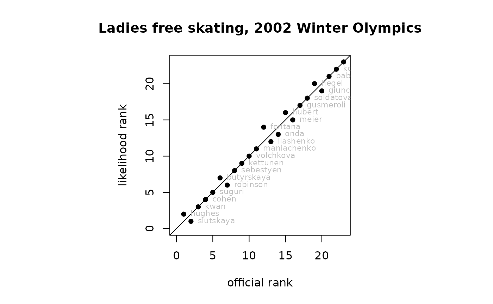

skating.RdA likelihood function for the competitors at the Ladies' Free Skate at the 2002 Winter Olympics
skatingThree objects
skating, a log-likelihood function for the competitors'
strengths, skating_table, an order table for each of the 9
judges, and skating_maxp, the result of maxp(skating),
which is included to save time in the examples.
These objects can be generated by running script
inst/skating.Rmd, which includes some further discussion and
technical documentation. The dataset is interesting because it has
been analysed by many workers, including Lock and Lock, for
consistency between the judges.
Note that file is structured so that each competitor is a row, and
each judge is a column. Function suppfun() requires a
transpose of this to operate.
Object skating_table is an order table, taken from Lock and
Lock. It corrects what appears to be an error in which judge 5 ranked
both Butyrskaya and Kettunen 12; there is no 13. Using EM, I reckon
that Butyrskaya should be ranked twelfth and Kettunen thirteenth.
https://en.wikipedia.org/wiki/Figure_skating_at_the_2002_Winter_Olympics#Full_results_2
Robin Lock and Kari Frazer Lock, Winter 2003. “Judging Figure Skating Judges”. STATS 36, ASA
There is an (Rbuildignore-d) discussion of a
skeleton dataset in the inst/ directory of the repo,
it's easy to confuse this with skating.
data(skating)
dotchart(skating_maxp)
ordertable_to_ranktable(skating_table)
#> A ranktable:
#> c1 c2 c3 c4 c5 c6 c7
#> J1 hughes kwan slutskaya suguri cohen butyrskaya robinson
#> J2 slutskaya cohen kwan hughes butyrskaya volchkova robinson
#> J3 slutskaya kwan hughes cohen suguri liashenko robinson
#> J4 slutskaya kwan cohen hughes suguri kettunen butyrskaya
#> J5 hughes kwan cohen slutskaya suguri robinson sebestyen
#> J6 slutskaya hughes kwan cohen butyrskaya sebestyen suguri
#> J7 hughes slutskaya kwan cohen suguri volchkova kettunen
#> J8 hughes kwan slutskaya cohen suguri robinson butyrskaya
#> J9 hughes slutskaya kwan cohen suguri butyrskaya robinson
#> c8 c9 c10 c11 c12 c13
#> J1 sebestyen kettunen volchkova onda hubert maniachenko
#> J2 suguri kettunen sebestyen fontana maniachenko liashenko
#> J3 butyrskaya meier onda maniachenko sebestyen kettunen
#> J4 sebestyen robinson liashenko volchkova maniachenko hubert
#> J5 liashenko fontana volchkova hubert butyrskaya kettunen
#> J6 robinson meier kettunen maniachenko volchkova onda
#> J7 butyrskaya fontana robinson maniachenko sebestyen liashenko
#> J8 sebestyen volchkova maniachenko kettunen fontana onda
#> J9 sebestyen maniachenko fontana onda meier hubert
#> c14 c15 c16 c17 c18 c19 c20
#> J1 fontana liashenko meier gusmeroli giunchi soldatova hegel
#> J2 onda gusmeroli meier hubert soldatova giunchi babiakova
#> J3 volchkova gusmeroli hegel hubert fontana babiakova giunchi
#> J4 meier onda fontana gusmeroli kopac babiakova soldatova
#> J5 meier onda maniachenko gusmeroli hegel giunchi babiakova
#> J6 liashenko fontana hubert soldatova gusmeroli hegel giunchi
#> J7 hubert onda meier gusmeroli soldatova babiakova giunchi
#> J8 liashenko hubert meier gusmeroli soldatova hegel giunchi
#> J9 kettunen volchkova liashenko gusmeroli hegel soldatova giunchi
#> c21 c22 c23
#> J1 kopac babiakova luca
#> J2 hegel kopac luca
#> J3 luca soldatova kopac
#> J4 giunchi hegel luca
#> J5 soldatova kopac luca
#> J6 babiakova kopac luca
#> J7 hegel kopac luca
#> J8 kopac babiakova luca
#> J9 kopac babiakova luca
rL <- sort(skating_maxp,decreasing=TRUE)
rL[] <- seq_along(rL)
rO <- seq_len(nrow(skating_table))
names(rO) <- rownames(skating_table)
ordertransplot(rO,rL,
xlab="official rank",ylab="likelihood rank",
main="Ladies free skating, 2002 Winter Olympics")
